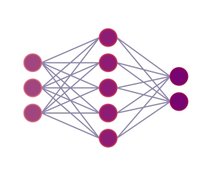

Why AI Now?
The world of AI, or artificial intelligence, has existed for dozens of years and will not stop anytime soon; however, in recent years, its progression has accelerated by a significant amount. New discoveries await at every corner, giving many young and ambitious students a plethora of new opportunities. Nevertheless, this rapid growth might also start to affect modern workplaces. With AI now able to perform tasks in many fields, it will start to redefine work across many professions. It has the potential to enrich human lives and make our professions more creative and entertaining, mainly because, with laborious parts out of their work, professionals can be more invested into the more engaging parts. With this knowledge, wouldn’t you want to go into this path and start to make new discoveries? Although before we go into that, we first should talk about what artificial intelligence actually is.
What is AI?
Artificial intelligence is mankind’s attempt to simulate the human brain or intelligence with the help of complex programs and machines. There are two main types of artificial intelligence: Traditional AI, and Generative AI. You probably have seen AI in both forms, but never thought they were much different from one another. Traditional AI tends to make calculated and smart decisions with the information it has. The problem is, these types of AI’s may be able to strategically beat you in a game of chess, but they aren’t able to reason, have a conversation, or generate new content. An example of this is, if you were to play a Traditional AI in a game of chess makes decisions based on pre-programmed rules and databases of past games. While these moves are strategic, they are not self-generated. On the other hand, generative AI has the ability to train itself through self-play and can develop new strategies independently. This means that it would be able to come up with its own stories, which takes it a step closer to being as similar as it can to the human brain. Because in the end, it is not human if it cannot even demonstrate creativity. With the recent discovery of Generative AI, it seems very self explanatory as to why the field of AI’s growth has started to accelerate in these past couple of years. Though at this point, you may be extremely confused as to how all of this works.
How Does AI Work?
"According to the massive company Amazon, neural networks are, 'a method in artificial intelligence that teaches computers to process data in a way that is inspired by the human brain.'"
The AI we have today is all because of the power of vast and expansive neural networks. These neural networks are collections of billions (the number varies on the amount of information the AI has) of nodes all strung together by synapses, similar to how your nerve cells are connected by synapses in your brain. To explain the complicated process of how a neural network stores what an AI has learned in a very simple manner: the AI learns through tiny "weights" that exist between the connections of each node in the network. Think of these weights as dials that control the importance of certain factors of what the AI is learning about.
For example, if you were to show an AI which has never seen a watermelon before, a collection of watermelon pictures, it would break down the picture into a set of features like its size, its color, its shape, etc. All these factors are important when deciding whether an object is a watermelon or not, and this will be judged by each factor's significance (what the weight controls). At the start of this learning process, when the weights are randomized, if you show the AI a picture of a cantaloupe and ask if it's a watermelon, it might say yes because it prioritizes size and shape over color in its decision. After either failing or succeeding in its decision, the AI will change its weights in an attempt to more accurately give guesses. Upon classifying thousands of pictures, the AI would eventually adjust its weights to reflect the importance of various factors, allowing it to accurately recognize the features of a watermelon and distinguish between what is and isn't a watermelon. This is a very simple explanation and may not make sense on higher scales of the AI’s learning, but it gives one a general idea of how these programs are able to learn new information quickly. There are millions upon millions of these nodes and weights, and Chat GPT-3’s neural network contains 175 billion nodes alone! With the explanation of what AI truly is out of the way, it is time to discuss why it is so important for your life and future.

Why is AI So Important?
With these rapid advancements in this field, many people across the world predict that AI will start taking jobs, because of their pure efficiency and speed of being able to complete tasks and think within milliseconds. The problem with these developments is that these job paths that many children dream about may be completely overtaken by machines soon enough. So you may be thinking, what is the fix to this? Simply put, start being more conversed with the topic of AI and possibly even take it as half your career path! For example, you can be a doctor, but still be very well versed in artificial intelligence and how to use it. This ensures that your future self will have a much more impactful role in your workspace and significantly lower the probability of your job being stolen in the near future.
What Action Can I Take Now?
If you would like to take action, and perhaps pursue this field in the near future, there are many things for you to do. Although, a simple thing I would suggest is to try to stay updated and look through our website. It will be filled with blogs similar to this one, and will even include things related to the field of medicine and how it is related to AI (the next blog). Our website is also filled with courses that will teach you how to code and potentially create your own AI. You don’t need to do any of these courses, but just keeping up with the latest blogs that are released will considerably improve your knowledge and could prove to be very helpful in the future.